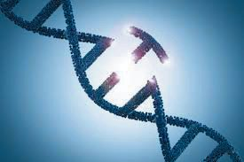

ഇന്ന് പ്രമേഹരോഗ
ചികിത്സയ്ക്ക് ഉപയോഗിക്കുന്ന
ഇൻസുലിൻ പ്രധാനമായും
ബാക്ടീരിയയിൽ നിന്നാണ്
ഉൽപ്പാദിപ്പിക്കുന്നത്.
ബാക്ടീരിയ ഉൽപ്പാദിപ്പിക്കുന്ന ഇൻസുലിൻ
എങ്ങനെ മനുഷ്യന്
ഉപയോഗിക്കാനാവും?
ഹെൽത്ത് ക്ല∫് സംഘടിപ്പിച്ച സെമിനാറിൽ ഡോക്ടറുടെ പ്രഭാഷണം കേട്ടപ്പോൾ സജുവിന് ഉണ്ടായ സംശയം ശ്രദ്ധിച്ചല്ലോ.
മനുഷ്യന് ഉപയോഗിക്കാൻ കഴിയുന്ന ഇൻസുലിൻ എങ്ങനെ ബാക്ടീരിയകൾക്ക്
ഉൽപ്പാദിപ്പിക്കാൻ കഴിയും? നിങ്ങളുടെ ഊഹം രേഖപ്പെടുത്തൂ.
ഇൻസുലിൻ ഉൽപ്പാദിപ്പിക്കാൻ ശേഷിയുള്ള ബാക്ടീരിയകളെ സൃഷ്ടിക്കുന്നതിന്റെ
ഘട്ടങ്ങൾ ചിത്രീകരിച്ചിരിക്കുന്നത് (7.1) നിരീക്ഷിക്കൂ. സൂചകങ്ങളുടെ അടിസ്ഥാനത്തിൽ ചിത്രീകരണം വിശകലനം ചെയ്ത് ഊഹത്തിന്റെ സാധുത പരിശോധിച്ച് നിഗമനങ്ങൾ സയൻസ് ഡയറിയിൽ എഴുതൂ.
മനുഷ്യകോശം
ബാക്ടീരിയ
ബാക്ടീരിയയുടെ ഉചഅ
മനുഷ്യ ഉചഅ
വൃത്താകൃതിയിലുള്ള
ബാക്ടീരിയയുടെ ഉചഅ
(പ്ലാസ്മിഡ്)
ഇൻസുലിൻ ഉൽപ്പാദക
ജീനിനെ മുറിച്ചെടുക്കുന്നു.
ഇവയിൽ നിന്നും
പ്രവർത്തനസജ്ജമായ
ഇൻസുലിൻ നിർമിക്കുന്നു.
ചിത്രീകരണം 7.1 ജനിതക എഞ്ചിനീയറിങ്ങിലൂടെയുള്ള ഇൻസുലിൻ ഉൽപ്പാദനം
114
Page 43
Figure fig_ch06_p043_01 (Page 43)

Figure fig_ch06_p043_02 (Page 43)
ജീവശാസ്ത്രം - ത
സൂച ക ങ്ങൾ
$
ബാക്ടീരിയയുടെ ജനിതകഘടനയിൽ വരുത്തിയ മാറ്റം.
$
ഈ ബാക്ടീരിയയിൽ ഉണ്ടായ പുതിയ ഗുണം.
$
ഈ ബാക്ടീരിയയുടെ പിൻതലമുറകളുടെ ഇൻസുലിൻ ഉൽപ്പാദനശേഷി.
ജനിതക എഞ്ചിനീയറിങ്
ജനിതക വസ്തുവിൽ മാറ്റം വരുത്തി അഭിലഷണീയമായ ഗുണങ്ങളുള്ള ജീവികളെ സൃഷ്ടിക്കുന്ന തരത്തിൽ ശാസ്ത്രം വളർന്നിരിക്കുന്നു. സൂക്ഷ്മജീവികളെയും
ജൈവപ്രക്രിയകളെയും മനുഷ്യന്റെ വിവിധ ആവശ്യങ്ങൾക്കായി ഉപയോഗിക്കുന്നതിനെയാണ് ജൈവസാങ്കേതികവിദ്യ (ആശീലേരവിീഹീഴ്യ) എന്ന് പറയുന്നത്.
ബി.സി. 4000 മുതൽ യീസ്റ്റ് എന്ന പൂപ്പൽ വിഭാഗത്തിൽപ്പെട്ട ജീവികളെ റൊട്ടി
പോലുള്ള ഭക്ഷ്യവസ്തുക്കൾ നിർമിക്കാൻ ഉപയോഗിച്ചിരുന്നു. പഞ്ചസാരയെ
ആൽക്കഹോളാക്കി മാറ്റാൻ പൂപ്പലുകൾക്കും ബാക്ടീരിയകൾക്കുമുള്ള കഴിവിനെ
വീഞ്ഞും അപ്പവും കേക്കുമെല്ലാം ഉണ്ടാക്കുവാൻ പ്രയോജനപ്പെടുത്തിയിരുന്നു.
ഇതെല്ലാം ജൈവസാങ്കേതികവിദ്യയിലെ പരമ്പരാഗത രീതികളായി കണക്കാക്കാം.
ജൈവസാങ്കേതികവിദ്യയുടെ ആധുനിക രൂപമാണ് ജനിതക എഞ്ചിനീയറിങ്.
ജീവികളുടെ ജനിതക വസ്തുവിൽ മാറ്റം വരുത്തി മനുഷ്യന് ആവശ്യമുള്ള ഉൽപ്പന്നങ്ങൾ ഉൽപ്പാദിപ്പിക്കാൻ ഇന്ന് കഴിയും. ഇൻസുലിൻ നിർമാണരീതി പരിചയപ്പെട്ടപ്പോൾ നിങ്ങൾക്കും അക്കാര്യം ബോധ്യപ്പെട്ടല്ലോ. ഇത്തരത്തിൽ ജീവികളുടെ
ജനിതകഘടനയിൽ അഭിലഷണീയമായ തരത്തിൽ മാറ്റം വരുത്തി ജീവികളുടെ
സ്വഭാവത്തെ നിയന്ത്രിക്കുന്ന സാങ്കേതികവിദ്യയാണ് ജനിതക എഞ്ചിനീയറിങ്
(ഏലിലശേര ഋിഴശിലലൃശിഴ). ജീനുകളെ മുറിച്ചെടുക്കാനും കൂട്ടിച്ചേർക്കാനും കഴിയുമെന്ന
കണ്ടെത്തലാണ് ഇതിന്റെ അടിസ്ഥാനം.
അതിസൂക്ഷ്മമായ ജീനുകളെ മുറിച്ചെടുക്കുകയും കൂട്ടിച്ചേർക്കുകയും ചെയ്യുന്നത്
എങ്ങനെയാണ്?
ചുവടെ നൽകി യ ഇ ര ഇ ക്ക ഉന്ന വിവ ര ണം സൂച ക ങ്ങ ള ഉടെ അടി സ്ഥ ആ ന ത്ത ഇൽ
വിശകലനം ചെയ്ത് കുറിപ്പ് തയാറാക്കൂ.
ജീനുകളെ മുറിച്ചെടുക്കാനും കൂട്ടിചേർക്കാനും
എൻസൈമുകളെയാണ് പ്രയോജനപ്പെടുത്തുന്നത്.
ജീനു ക ളെ മുറി ച്ച ഉ മ ആ റ്റ ആൻ ഉപ ഏയാ ഗ ഇ ക്ക ഉ ന്ന ത്
റെസ്ട്രിക്ഷൻ എൻഡോന്യൂക്ലിയേസ് (ഞലൃേെശരശേീി
ഋിറീിൗരഹലമലെ) എന്ന എൻസൈമാണ്. ഇത് ജനിതക കത്രിക (ഏലിലശേര രെശീൈൃ)െ എന്നറിയപ്പെടുന്നു.
വിളക്കിച്ചേർക്കാൻ ഉപയോഗിക്കുന്നത് ലിഗേസ്
(ഘശഴമലെ) എന്ന എൻസൈമാണ്. ഇത് ജനിതക പശ
(ഏലിലശേര ഴഹൗല) എന്നറിയപ്പെടുന്നു.
ജീവശാസ്ത്രം - ത
മനുഷ്യനിലെ ഇൻസുലിൻ ഉൽപ്പാദക ജീനിനെ ബാക്ടീരിയയിലേക്ക്
സന്നിവേശിപ്പിക്കാൻ കഴിഞ്ഞത് എങ്ങനെയാണ്? ഒരു കോശത്തിലെ
ജീനിനെ മറ്റൊരു കോശത്തിലേക്ക് എത്തിക്കുന്നത് അനുയോജ്യരായ
വാഹകരെ (ഢലരീേൃ)െ ഉപയോഗിച്ചാണ്. കൂട്ടിച്ചേർത്ത ജീനുകൾ ഉള്ള വാഹകർ ലക്ഷ്യകോശത്തിൽ പ്രവേശിക്കുന്നു. സാധാരണയായി ബാക്ടീരിയകളിലെ പ്ലാസ്മിഡ് ആണ് വാഹകരായി ഉപയോഗിക്കുന്നത്. അതുവഴി
പുതിയ ജീനുകൾ ലക്ഷ്യകോശത്തിലെ ജനിതകഘടനയുടെ ഭാഗമാകുന്നു.
സൂച ക ങ്ങൾ
$
ജീൻ മുറിച്ചുമാറ്റൽ
$
ജീൻ വിളക്കിച്ചേർക്കൽ
$
വാഹകർ
ജനിതക എഞ്ചിനീയറിങ്ങിലുണ്ടായ വളർച്ച ഇന്ന് ജീവിതത്തിന്റെ വിവിധ മേഖലകളിൽ സ്വാധീനം ചെലുത്തുന്നുണ്ട്.
ജനിതക എഞ്ചിനീയറിങ്ങിന്റെ ചില സാധ്യതകൾ ചുവടെ നൽകിയ ചിത്രീകരണം
(7.2) നിരീക്ഷിച്ച് മന ഇലാക്കൂ.
ജീൻ തെറാപ്പി
ജനിതക പരിഷ്കാരം വരുത്തിയ മൃഗങ്ങളും വിളകളും
ഫോറൻസിക് പരിശോധന
ഫോറൻസിക് പരിശോധന
ചിത്രീകരണം 7.2 ജനിതക എഞ്ചിനീയറിങ്ങിന്റെ സാധ്യതകൾ
ജീൻ തെറാപ്പി
ജനിതകരോഗങ്ങളുടെ ചികിത്സയിൽ വലിയ കുതിച്ചുചാട്ടങ്ങൾക്ക് ജനിതക
എഞ്ചിനീയറിങ് സഹായകമായി. രോഗത്തിന് കാരണമായ ജീനുകളെ മാറ്റി പകരം
പ്രവർത്തനക്ഷമമായ ജീനുകൾ ഉൾപ്പെടുത്തുന്ന ചികിത്സാരീതിയാണ് "ജീൻ
ചികിത്സ' (ഏലില വേലൃമ്യ). ഇത് ജനിതക രോഗങ്ങളുടെ നിയന്ത്രണത്തിൽ വലിയ
പ്രതീക്ഷകളാണ് നൽകുന്നത്.
ജീവശാസ്ത്രം - ത
അതിസൂക്ഷ്മങ്ങളായ
ആയിരക്കണക്കിനു ജീനുകളിൽ
നിന്ന് രോഗകാരികളായ ജീനുകളെ എങ്ങനെ കണ്ടെത്തും?
താരയുടെ സംശയത്തോടുള്ള നിങ്ങളുടെ പ്രതികരണം എന്താണ്?
ചുവടെ നൽകിയ കുറിപ്പ് സൂചകങ്ങളുടെ അടിസ്ഥാനത്തിൽ വിശകലനം ചെയ്ത് നിഗമനങ്ങൾ സയൻസ്
ഡയറിയിൽ എഴുതൂ.
മനുഷ്യ ജീനോം പദ്ധതി
ശാസ്ത്രം ഏറെ പുരോഗമിച്ചിട്ടും ജനിതകരോഗങ്ങൾ നിയന്ത്രണാധീനമാക്കാൻ കഴിഞ്ഞിരുന്നില്ല. ഓരോ സവിശേഷതയ്ക്കും
അടിസ്ഥാനമായ ജീനുകളും അവയുടെ സ്ഥാനവും കൃത്യമായി
കണ്ടെത്താനായില്ല എന്നതായിരുന്നു കാരണം. ഈ പരിമിതികൾ
മറികടക്കുന്നതിനുള്ള ഇടപെടലായാണ് 1990 കളിൽ മനുഷ്യ
ജീനോം പദ്ധതി (ഔാമി ഏലിീാല ജൃീഷലര)േ എന്ന സംരംഭത്തിന്
തുടക്കം കുറിച്ചത്. ലോകത്തിന്റെ പല ഭാഗങ്ങളിലായി വിവിധ
ലാബുകളിൽ 2003 വരെ നീണ്ടുനിന്ന ഗവേഷണങ്ങളുടെ ഫലചിത്രം 7.1
മായി മനുഷ്യനിലെ ജനിതക രഹസ്യങ്ങൾ കണ്ടെത്താൻ കഴിമനുഷ്യ ജീനോം പദ്ധതിയുടെ
ഞ്ഞു. ഒരു പ്രതേ്യക സ്വഭാവത്തിന് കാരണമായ ജീനിന്റെ സ്ഥാനം
ലോഗോ
ഉചഅ യിൽ എവിടെയാണെന്ന് കൃത്യമായി കണ്ടെത്തുന്ന സാങ്കേതികവിദ്യയായ ജീൻ മാപ്പിങ് (ഏലില ആമുശിഴ) ആണ് ഇതിന് സഹായിച്ചത്. ഒരു ജീവിയിൽ അടങ്ങിയിട്ടുള്ള മൊത്തം ജനിതക വസ്തുവിനെ അതിന്റെ ജീനോം
എന്ന് വിളിക്കുന്നു. മനുഷ്യ ഉചഅ യിൽത്തന്നെ പ്രോട്ടീൻ നിർമാണത്തിന് സഹായിക്കുന്ന
ജീനുകളൊഴിച്ച് ഭൂരിഭാഗം ജീനുകളും പ്രവർത്തനക്ഷമമല്ല. ഇവയെ ജങ്ക് ജീനുകൾ (ഖൗിസ ഴലില)െ
എന്നാണ് വിളിക്കുന്നത്.
ജീവശാസ്ത്രം - ത
മനുഷ്യ ജീനോം പദ്ധതിയുടെ പ്രസക്തി എന്താണെന്ന് മന ഇലായില്ലേ? ചുവടെ
നൽകിയിരിക്കുന്ന വിവരങ്ങളോടൊപ്പം കൂടുതൽ വിവരങ്ങൾ കൂട്ടിച്ചേർത്ത്
ചുമർപത്രിക തയാറാക്കി ക്ലാസ്മുറിയിൽ പ്രദർശിപ്പിക്കൂ.
മനുഷ്യജീനോമിൽ ഏകദേശം 24000 സജീവ ജീനുകളുണ്ട്.
മനുഷ്യ ഉചഅ യുടെ ഭൂരിഭാഗവും ജങ്ക് ജീനുകളാണ്.
മനുഷ്യർ തΩിൽ 0.2 ശതമാനം മാത്രമാണ് ഉചഅ യിലെ വ്യത്യാസം.
മനുഷ്യജീനോമിലെ 200 ഓളം ജീനുകൾ ബാക് ട ഈരിയയുടേതിന്
സമാനമാണ്.
ജനിതകപരിഷ്കാരം വരുത്തിയ മൃഗങ്ങളും വിളകളും
മനുഷ്യരിൽ രോഗചികിത്സയ്ക്കുപയോഗിക്കാവുന്ന പല പ്രോട്ടീനുകളും ജനിതക
എഞ്ചിനീയറിങ്ങിലൂടെ ഉൽപ്പാദിപ്പിക്കുന്നുണ്ട്.
ചുവടെ നൽകിയ പട്ടിക (7.1) പരിശോധിച്ച് ഇത്തരം പ്രോട്ടീനുകളുടെ
ഉപയോഗത്തെക്കുറിച്ച് കുറിപ്പ് തയാറാക്കൂ.
ചികിത്സയ്ക്ക് ഉപയോഗിക്കുന്ന
പ്രോട്ടീൻ
രോഗം/രോഗ ലക്ഷണങ്ങൾ
ഇന്റർഫെറോണുകൾ
വൈറൽ രോഗങ്ങൾ
ഇൻസുലിൻ
പ്രമേഹം
എൻഡോർഫിൻ
വേദന
സൊമാറ്റോട്രോപ്പിൻ
വളർച്ചാ വൈകല്യങ്ങൾ
പട്ടിക 7.1
ജൈവസാങ്കേതികവിദ്യയിൽ നിന്ന് ജനിതക എഞ്ചിനീയറിങ് ഏറെ വളർന്നിരിക്കുന്നു. ജീവികളിൽ കൂടുതൽ കാര്യക്ഷമമായി ജനിതക പരിഷ്കാരം (ഏലിലശേര
ആീറശളശരമശേീി) വരുത്താൻ ഇന്ന് കഴിയുന്നുണ്ട്. ഒരു ജീവിയുടെ ജനിതക ഘടനയിൽ അഭിലഷണീയമായ ഗുണത്തെ പ്രതിനിധീകരിക്കുന്ന ജീനിനെ കടത്തിവിട്ടാണ് ഇത് സാധ്യമാകുന്നത്.
ജീവശാസ്ത്രം - ത
ജനിതക പരിഷ്കാരം മുന്നോട്ടുവയ്ക്കുന്ന ഭാവിയുടെ വാഗ്ദാനങ്ങളിലൊന്നാണ് മരുന്നു തരും മൃഗങ്ങൾ
(ജവമൃാ മിശാമഹ)െ.
മനു ഷ ്യന് ആവ ശ ്യ മ ആയ ഇൻസുലിന്റെയും വളർച്ചാ ഹോർമോണുകളുടെയും ജീനുകളെ പശു, പന്നി മുതലായ ജന്തുക്കളിലേക്ക് സന്നിവേശിപ്പിച്ചാണ് അവയെ മരുന്നു തരും മൃഗങ്ങളാക്കി മാറ്റുന്നത്.
ബാക്ടീരിയയെ ഉപയോഗിച്ച് ഇൻസുലിൻ ഉൽപ്പാദിപ്പിക്കുന്നതിന് ചില
പരിമിതികളുണ്ട്. അവയെ വളർത്തുകയും പരിചരിക്കുകയും ചെയ്യുക
പ്രയാ സ മാണെന്ന ത ആണ് അതിൽ
പ്രധാനം. ഇതിന് പകരം ജനിതക
പരിഷ്കാരം വരുത്തിയ മൃഗങ്ങളുടെ
രക്ത ത്ത ഇൽ നിന്നോ പാലിൽ
നിന്നോ ഔഷധങ്ങൾ വേർതിരിച്ചെടു ക്ക ആൻ കഴി യ ഉ എമ ന്ന ആണ് ഈ
രംഗത്തെ ഗവേഷണഫലങ്ങൾ സൂചിപ്പിക്കുന്നത്.
വെട്ടിത്തിരുത്തുന്ന ജനിതകം
ഒരു ഉപന്യാസം തയാറാക്കിയതിനുശേഷം അത്
വെട്ടി ത്ത ഇ ര ഉത്തി കൂടു ത ൽ നന്നാ ക്ക ഉ ന്ന ത ഉപോലെ ജീവികളുടെ ജനിതക ഘടനയിലെ ജീനുകളെ എഡിറ്റ് ചെയ്യാൻ ഇന്ന് ജനിതക എഞ്ചിനീയ റ ഇങ്ങിന് കഴി യ ഉം. ജനി ത ക എഞ്ചി ന ഈ യ റിങ്ങിന്റെ ഏറ്റവും ആധുനികമായ തലമാണ് ജനിതക എഡിറ്റിങ്ങ് (ഏലില ലറശശേിഴ). അതിനായി ഉപയോഗിക്കുന്ന ഏറ്റവും കാര്യക്ഷമമായ ജനിതക
കത്രികയാണ് ഇഞകടജഞ ഇമ9െ. ഇതിൽ 'ഇമ9െ'
എന്ന എൻസൈമും ഒരു ഗൈഡഡ് (ഏൗശറലറ)
ഞചഅ യും (ഴ ഞചഅ) അടങ്ങിയിരിക്കുന്നു. ജീൻ
എഡിറ്റിംഗിൽ ആഗോളവ്യാപകമായി ഗവേഷണങ്ങൾ സജീവമാണ്. ജീൻ എഡിറ്റിങ്ങ് നടത്തിയ
ഇരട്ട കുട്ടി ക ൾ ചൈന യ ഇൽ ജനി ച്ച ത ആയി
വാർത്ത പുറത്തു വന്നിരിക്കുന്നു. ഒകഢ യെ പ്രതിരോധിക്കാനുള്ള ശേഷി ഈ കുട്ടികൾ ജീൻ
എഡിറ്റിംഗിലൂടെ നേടിയതായി പ്രഖ്യാപിക്കപ്പെട്ടു
കഴിഞ്ഞു. ജീൻ തെറാപ്പിയുടെ അനന്തസാധ്യതകളിലേയ്ക്കാണ് ഈ സാങ്കേതികവിദ്യ വാതിലുകൾ തുറക്കുന്നത്. എന്നാൽ ഇത് ഒട്ടേറെ
വിവാ ദ ങ്ങ ൾക്കും തുടക്കം കുറി ച്ച ഇ ട്ട ഉ ണ്ട ് .
ഇത്തരം പരീക്ഷണങ്ങളുടെ ചൂഷണ സാധ്യതകളും അപകടകരമായ പാർശ്വഫലങ്ങളും സംഭവിക്കാൻ ഇടയുള്ള മൂല്യശോഷണവും കണക്കി എല ട ഉ ക്ക ആ എത യ ഉള്ള ഗവേ ഷ ണ ങ്ങ ൾക്ക്
എതിരെ ലോകവ്യാപകമായി പ്രതിഷേധം ഇരമ്പുകയാണ്.
മൃഗങ്ങളിൽ മാത്രമല്ല സസ്യങ്ങളിലും
ജനിതക പരിഷ്കാരം വരുത്തുന്നുണ്ട്. കീടങ്ങളെ പ്രതിരോധിക്കാൻ
ശേഷിയുള്ള ബി.റ്റി. വഴുതനയും,
സോയാ ബ ഈ ന ഉം, പരു ത്ത ഇ യ ഉം,
ചോളവും ഒക്കെ ഇന്ന് സുലഭമാണ്.
ജീവികളിൽ ജനിതക പരിഷ്കാരം
വരു ത്ത ഉ ഏമ്പാൾ പരി സ്ഥ ഇ ത ഇക്കോ
മനുഷ്യനോ പാർശ്വഫലങ്ങൾ ഉണ്ടാകില്ലെന്ന് ഉറപ്പുവരുത്തേണ്ടതുണ്ട്. ഈ രംഗത്തെ
പുതിയ കണ്ടെത്തലുകളെപ്പറ്റി കൂടുതൽ വിവരം ശേഖരിച്ച് ഒരു ശാസ്ത്രപതിപ്പ് തയാറാക്കൂ.
വർഷങ്ങൾക്കുമുമ്പ് നഷ്ടപ്പെട്ട കുട്ടിയെ
തിരിച്ചുകിട്ടി; തിരിച്ചറിഞ്ഞത് ഡി.എൻ.എ.
പരിശോധനയിലൂടെ
പത്രവാർത്തയുടെ തലക്കെട്ട് ശ്രദ്ധിച്ചല്ലോ.
ഉചഅ പരിശോധനയിലൂടെ ആളുകളെ തിരിച്ചറിയാൻ കഴിയുന്നത് എങ്ങനെയാണ്?
ചുവടെ നൽകിയ വിവരണം സൂചകങ്ങൾക്കനുസരിച്ച് ചർച്ചചെയ്ത് നിഗമനം
രൂപീകരിച്ച് സയൻസ് ഡയറിയിൽ എഴുതൂ.
ഉചഅ ഫിംഗർപ്രിന്റിങ്ങ്
120
സംശയിക്കപ്പെടുന്ന
വ്യക്തി- 3
സംശയിക്കപ്പെടുന്ന
വ്യക്തി- 2
സംശയിക്കപ്പെടുന്ന
വ്യക്തി- 1
കുറ്റകൃത്യം നടന്നിടത്ത്നിന്ന് ശേഖരിച്ചത്
ന്യൂക്ലിയോറ്റൈഡുകളുടെ ക്രമീകരണം പരിശോധിക്കുന്ന സാങ്കേതികവിദ്യയാണ് ഉചഅ പ്രൊഫൈലിങ് (ഉചഅ ജൃീളശഹശിഴ). 1984 ൽ അലക് ജെഫ്രി
(അഹലര ഖലളളൃല്യ)െ എന്ന ശാസ്ത്രജ്ഞൻ നടത്തിയ ചില പരീക്ഷണങ്ങളാണ്
ഉചഅ പരിശോധന എന്ന സാധ്യതയിലേക്കു വഴിതെളിച്ചത്. ഓരോ വ്യക്തിയിലെയും വിരലടയാളം വ്യത്യസ്തമായിരിക്കുന്നതുപോലെ ഉചഅ യിലെ
ന്യൂക്ലിയോറ്റൈഡുകളുടെ ക്രമീകരണവും വ്യത്യസ്തമായിരിക്കും. ഈ
കണ്ടെത്തലാണ് ഉചഅ പരിശോധനയ്ക്ക് അടിസ്ഥാനമായത്. അതിനാൽ
അലക് ജെഫ്രി
ഈ സാങ്കേതികവിദ്യയെ ഉചഅ ഫിംഗർപ്രിന്റിങ്ങ് എന്നും വിളിക്കുന്നു.
ന്യൂക്ലിയോറ്റൈഡുകളുടെ ക്രമീകരണത്തിൽ ഏറ്റവും സമാനത അടുത്ത ബന്ധുക്കൾ തΩിലായിരിക്കും. അതിനാൽ കുടുംബപാരമ്പര്യം കണ്ടെത്താനും മാതൃത്വ പിതൃത്വ തർക്കങ്ങളിൽ യഥാർഥ മാതാപിതാക്കളെ തിരിച്ചറിയാനും പ്രകൃതിക്ഷോഭം, യുദ്ധം തുടങ്ങിയ കാരണങ്ങളാൽ നഷ്ടപ്പെട്ടവരെ വർഷങ്ങൾക്കുശേഷം കണ്ടെത്തുമ്പോൾ തിരിച്ചറിയാനും, ഉചഅ പ്രൊഫൈലിങ് സഹായകമാണ്.
ഉചഅ പരിശോധനാ സാമ്പിളുകൾ
കൊലപാതകം, മോഷണം തുടങ്ങിയ കുറ്റകൃത്യങ്ങൾ നടന്ന സ്ഥല ത്ത ഉ ന ഇന്നു ലഭി ക്ക ഉന്ന
ത്വക്കിന്റെ ഭാഗം, മുടി, നഖം, രക്തം, മറ്റ് ശരീരദ്രവങ്ങൾ എന്നിവയിലെ ഉചഅ സംശയിക്കപ്പെടുന്നവരുടെ ഉചഅ യുമായി താരതമ്യം ചെയ്യുന്നു.
അങ്ങനെ സംശയിക്കപ്പെടുന്നയാൾ യഥാർഥ
കുറ്റവാളിയാണോ എന്ന് തിരിച്ചറിയാൻ ഇതുവഴി
കഴിയും.
ഉചഅ ഫിംഗർപ്രിന്റിങ്ങ് എന്ന സാങ്കേതികവിദ്യയുടെ അടിസ്ഥാനം.
$
ഉചഅ ഫിംഗർപ്രിന്റിംഗിന്റെ സാധ്യതകൾ.
ജനിതക എഞ്ചിനീയറിങ്ങിന്റെ അനന്തമായ സാധ്യതകളിൽ ചിലത് നΩൾ പരിചയപ്പെട്ടു. കൂടുതൽ സാധ്യതകളെക്കുറിച്ച് വിവരശേഖരണം നടത്തി ശാസ്ത്രമൂലയിൽ പ്രദർശിപ്പിക്കൂ. സജീവമായ ഗവേഷണങ്ങളിലൂടെയും കണ്ടെത്തലുകളിലൂടെയും ഈ മേഖല അനുദിനം വികസിച്ച് കൊണ്ടിരിക്കുന്നു. എന്നാൽ
മറ്റേതൊരു സാങ്കേതികവിദ്യയെയും പോലെ ജനിതക എഞ്ചിനീയറിങ്ങും
ദുരുപയോഗം ചെയ്യപ്പെടുന്നുണ്ട്. ചുവടെ നൽകിയ കൊളാഷ് നിരീക്ഷിക്കൂ.
തദ്ദേശീയ ഇനങ്ങൾക്കു ഭീഷണി
ജനിതകമാറ്റം വരുത്തിയ വിള തദ്ദേശീയ ഇനങ്ങൾക്കു
ഭീഷണി ഉയർത്തുമെന്നും മനുഷ്യരിൽ ആരോഗ്യ പ്രശ്നങ്ങൾ സൃഷ്ടിച്ചേക്കുമെന്നും വിമർശനമുയരുന്നു.
ജൈവ
ജനിതക ആയുധങ്ങൾ
ഗാണുക്കമാറ്റം വരുത്ത പുതിയ വെ
പെരുപ്പ ളെയും ഐി സൃഷ്ടിക്ക ല്ലുവിളി
ള ഉ എട ഇച്ചെടുക്കുന്ന ജവസാങ്കേത ഉന്ന മാരക
ഏജൈവ ഏമ ൽ ്രപ ഏയ ആരോഗാണുക്കിെകവിദ്യയിലൂരൊയുദ്ധം
ഗിക്കുന്ന
ട
ളയും ശ
നിൽപ്പിന
.
് ഭീഷണഇത് മനുഷ്യ യ ഉ ദ്ധ ര ഈ ത ഇ ത്രുക്കയാ
വം
ഇയാവുക
യാണ്. ശത്തിന്റെ ന ണ ്
ഇല
നം
വകാശലംഘ തഅ
ം
റ്റ
ആ
മ
ക
സ്വാ
ജനിത
ഈവികളുടെ
റ്ററ്റം ജ
ജനിതകമാുമേലുള്ള കടന്നുകയ
ംല
ന്ത്ര്യത്തിനും ഇത് അവകാശ ടമാണെന്ന ന്നും ചില സംഘ
ഘനമാണെദിക്കുന്നു.
നകൾ വാ
മനുഷ്യ പുരോഗതിക്ക് ഉപാധിയാകേണ്ട സാങ്കേതികവിദ്യകൾ
ചെയ്യുന്നത് ശരിയാണോ?
ദുരുപയോഗം
ഇത്തരം സാധ്യതകൾ നിലനിൽക്കുമ്പോൾ ജനിതക എൻജിനീയറിങ്ങിനെ
പ്രോൽസാഹിപ്പിക്കാനാകുമോ?
ഈ വിഷയത്തിൽ ക്ലാസിൽ ഒരു സംവാദം സംഘടിപ്പിക്കൂ.
മനു ഷ ്യന്റെ ചിന്താ ഏശ ഷ ഇ യ ഉടെ ഉൽപ്പ ന്ന മ ആണ്
ശാസ്ത്രവും സാങ്കേതിക വിദ്യയും. മനുഷ്യനന്മയ്ക്കായി പ്രയോജനപ്പെടുത്തുമ്പോൾ മാത്രമേ നമുക്ക്
ഈ ചിന്താശേഷിയോട് നീതി പുലർത്താൻ കഴിയൂ.
മനുഷ്യൻ അഭിമുഖീകരിക്കുന്ന വെല്ലുവിളികളെ അതിജീവിക്കാനുള്ള ഉപാധി എന്ന നിലയിലാണ് ഏതൊരു
ശാസ്ത്രവും സാങ്കേതികവിദ്യയും നΩൾ പ്രയോജനപ്പെടുത്തേണ്ടത്.